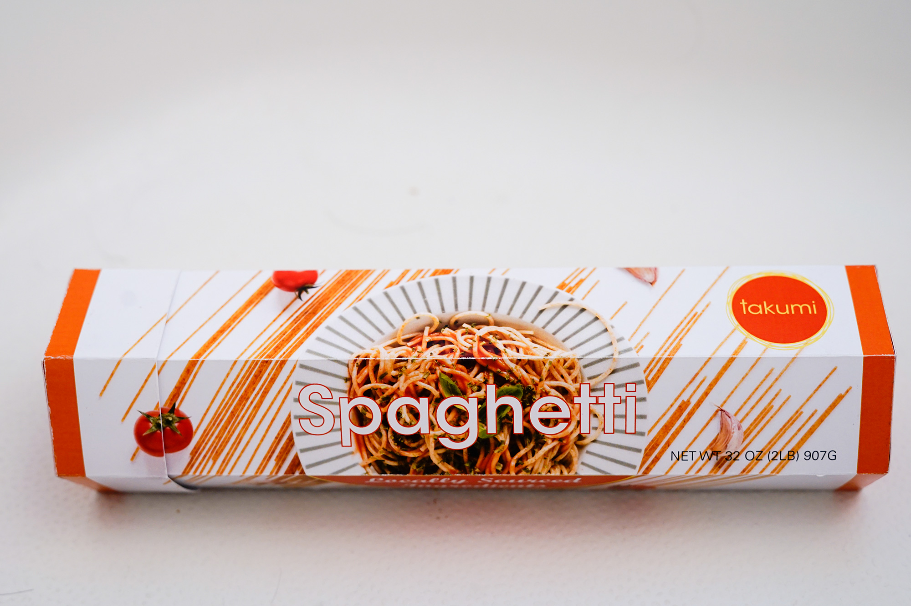
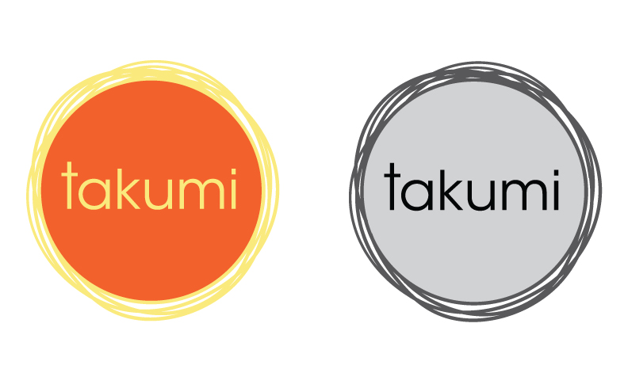
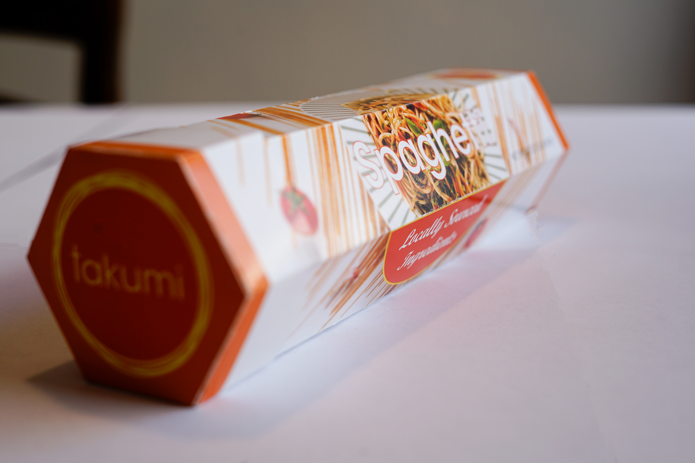
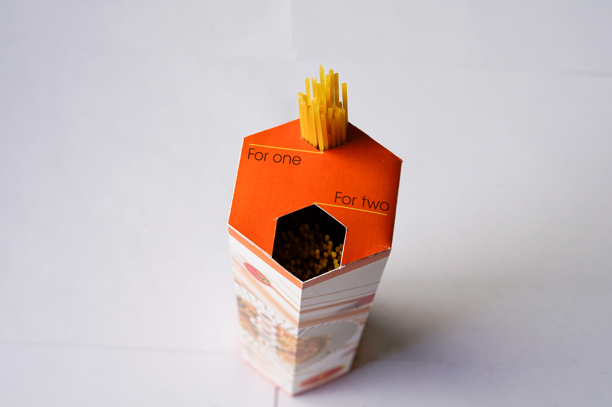

Takumi Pasta

Takumi Pasta was a graphic design project designing a logo and packaging for a generic food item. Based on my research, I turned in a process manual at the end of the project.
Tools Used: Adobe Illustrator & Photoshop Product Type: Graphic Design
Creative Brief
Needs
There are thousands of products in the market, having a unique packaging design is more likely to make the product more marketable because unique packaging design can leave a deep impression for the customer. For instance, if the material or the packaging design is not in favor of the customer, the product would be difficult to be memorized. However, if the packaging design and the quality of the product is well done, the customer would be more likely to discover the product.
Background
Because I chose pasta as the product of the project, I bought several brands of pasta to compare their designs. What I found was that so many pasta’s designs are similar products in the market now. Many producers just used a plastic bag to pack their products. Some researches indicate that even though plastic products are recycled, the percentage of recycling is very low. Therefore, the focus point that I worked on was a product’s sustainability. Therefore, using sustainable material for designing packaging was one of the goals for my project.
Project Objective
The packaging could use recycled material instead of a plastic or square box. This is the aspects that can set me apart from competitors.
Project Strategy
As mentioned, I would replace the plastic packaging to recycling material in order to improve the sustainability of the product. Furthermore, I also consider the readability of the text on the packaging. I found that the cooking guide of some boxed pasta is not clear enough for new cooker. Therefore, the legibility of cooking guide must be easy to follow.
Audience
• Senior. I tend to design packaging that can measure serving Size, so the users don’t need to measure how much spaghetti they need.
• People who don’t often cook. Having a clear description for those people because they don’t need to find more additional information for cooking spaghetti. The benefit of putting spaghetti in a section is that even though people don’t cook spaghetti, the description can tell them how much they need for a single person.
Logo Design + Packaging Design
I explored abstract notions as well as pictographic ones. Additionally, I designed a unique and compact packaging,the product could fit perfectly into the packaging. After that, I created a process manual used as a guideline for this company’s branding and identity. It also includes specifications of the correct logo usage, size, color and typefaces. This extends to include correct uses of the Enhance logo and brand in its business system, individual packaging and website. Here are the links of the graphic standard of the logo and the process manual:



Lessons Learned
This project gave me a better understanding of logo design and packaging design that it must consider not only the appearance of the design, but also think about using graphics to convey necessary information to the audience. This project made me explore the typeface, graphic elements and photographics, and then combine these design elements to be a whole design. I realized that it was important to ask for feedback from classmates and professors because when you have worked on one project for a long time, it is difficult to catch the drawback of the design. Therefore, It is significant to work with other people to improve the design.